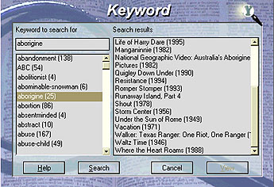
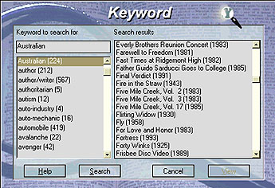
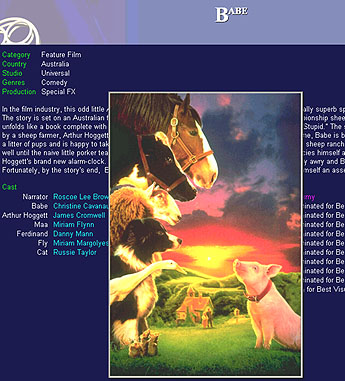
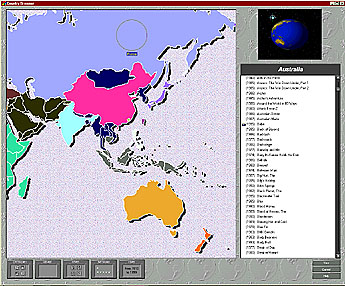
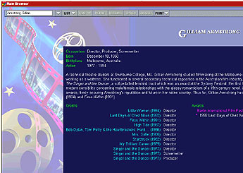
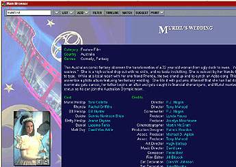

|
|
|
|
|
When Bob Burt reviewed the first release of the Corel All-Movie Guide (PC Update, November 1995) it was described by Corel as "The Ultimate Guide to the Movies." Having spent over a day investigating the second release, I think it is wise that Corel has dropped that claim now.   That line has been replaced by the blander statement "100,000 Movies and Video References on CD-ROM." Having access to such an extensive repository of information is absolutely irresistible to a dedicated film fan like me - who regularly visits the Internet Movie Database site on the www checking on details of films old and new. Installation Installing the program via Windows 95 is effortless and if you have the auto-run feature enabled you just need to click the Run button to load the program. Then you are at the Video Store, which gives you access to all the search facilities in the Corel All-Movie Guide 2 (CAMG2) The interface to the program is far from intuitive and is rather reminiscent of a "Magical Mystery Tour." For instance, the Information monitor takes you to a list of all the movies in the database. A poster to the right of the popcorn machine accesses a list of all movies that are accompanied by a movie poster or photograph. Click on the monitor to the left of the Information monitor and it'll display a list of all the famous people in the database and their photos. Other objects hide other information which can be ascertained by placing the mouse cursor over them. This is all explained in the accompanying booklet, but in use appears involved and not user friendly. This contrasts with a competitive product I often use, which has a well-designed and logical interface. Categories When you want information on a particular type of film you choose from the 16 categories on the video shelf display to see the full list of each. The categories are Features, Recent, Horror, Documentary, Television, Action, Comedy, Drama, Mystery, SciFi, Classics, Western, Crime, War, Children and Music. Reliability test To test the reliability and comprehensiveness of CAMG2, I first carried out a key word search for "Aborigine" and the program claimed it could only find 25 occurrences. Looking through the films listed, it was immediately apparent to me that one of Australia's most under-rated films which deals with the tragedy of our local Aborigines was not found. Although The Chant of Jimmie Blacksmith is in the database, the keyword search had not located it. It did manage to remind me of many other fine films like Manganinnie, Jedda, The Last Shout and Romper Stomper.  Of the 25 films listed only 12 matched the keyword "Aborigine". The other 13, or just over 50 percent appear to me to have no connection with Australia and its aborigines. These included such rib-ticklers as the 1956 USA drama Storm Center, starring Bette Davis; the Frisbee Disc video, The Vacation from Italy and Under The Sun of Rome. Australia Because Australian films and their directors are making an impact worldwide, I decided to do a further test. Doing a keyword search for "Australia" I was interested to see 224 occurrences listed. Perusing the titles thrown up made me think I must have mistyped the word, so I entered it again. Same result - and so many of them were both quirky and unreliable. It listed films from all over the world that appear to have no connection whatsoever with Australia. These included such weird suggestions as the Everley Brothers Reunion Concert, a documentary shot at the Royal Albert Hall, a 1938 USA film Start Cheering, the 1973 French film La Grande Boueffe, Backpacking America, I Pagliacci, Montana (a USA Western) and the USA comedy Cactus Flower starring Goldie Hawn. But there were some notable exclusions. It did not find The Chant of Jimmie Blacksmith nor the film Vacant Possession, although both are in the database and mention "Australia" in the plot outlines! |
a huge data- base of film and video Yet it did list Under The Sun of Rome, a 1949 Italian film that appears to have no connection. There are at least six others like Walker: Texas Ranger, Waltz Time and Storm Centre in this list which are questionable "finds". When you search for a list of Australian films using a globe almost hidden as an icon near the base of the video store counter, the results are quite different. It then reports 592 movies in the list, although there are a number of notable titles missed.  Corel replies Concerned that there may be some feature in CAMG2 that I misunderstood, I e-mailed Corel in Canada explaining the problems I had unearthed with the keyword search function and asked if they were aware of its limitations. Corel replied, "The problem you asked about has to do with the Database. If the word you are searching has not been entered as a keyword then it will not come up in the search. This means that if a word appears in the plot outline but is not entered as a keyword it will also not come up in a search. If movies come up that seem to have nothing to do with the search word it may be that the word was incorrectly entered as a keyword for that movie. These are problems with the database which we license from All-Movie Guide. We make sure to pass on all the errors which have been reported, and I will pass on yours." Further tests After reading this reply I decided to look more thoroughly into the Australian content of the CD-ROM. The 224 titles in the keyword search includes that 70s sex romp Alvin Purple, but does not list Alvin Purple Rides Again. Both are in the database and acknowledged as Australian films! To see how up-to-date it is I searched and found a synopsis of Vacant Possession, which was not available at the Internet Movie Database (imd) http://us.imdb.com/. Looking for the latest Australian movie releases using the timeline feature unearthed Shine (1996) and Angel Baby (1995). Reading about our own director Gillian Armstrong, I was disappointed to find that in giving details of some of her films her name is spelt Gilliam. In discussing her first short film The Singer and The Dancer, the Guide gives the year it was made as both 1976 and 1977. A similar annoying error is made with New Zealander Jane Campion's internationally acclaimed The Piano. We are told it was made in 1992 and 1993. The correct year is 1993.
Because I was also interested to find a plot outline for the first feature film of German director, Percy Adlon, The Last Five Days, I was delighted to read the details immediately. This information could not be found on the imd nor anywhere else on the Internet, when I searched for it days before. ConclusionsIf you want a huge database of film and video from which to choose "a nice night's home viewing", camg2 will throw up lots of information to allow you to select from a range of categories. If you are a serious film buff who wants accurate, reliable information about films, directors, films from particular countries and keyword searches you can rely on, you may need to investigate other sources of information. Greater attention to checking detail and proofreading the information already contained in the database is needed before camg2 becomes a "Must Buy" for me. One advantage for buyers is that quarterly updates to the Guide are available on the Internet. The first one is already online and contains information on over 600 new additions to the movie database. The file is mgupd201.exe and is 1898 KB. Point your browser at the Corel home page http://www.corel.com About the authorRobin Howells has been a keen movie- goer since his school days when he attended Saturday afternoon matinees at the Adelphi during World War II. He belongs to two film societies, one of which - The Melbourne Film Society - is the oldest in Australia. It was formed 53 years ago and he has been a member for 23 years. |
|
 |
 Figure 4. Results of searching for "Muriel's W" |
PC Update, March 1997

Content © 2002 Robin Howells All rights reserved
design, layout and web authoring by